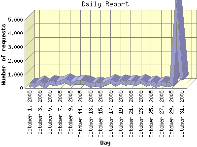

Report generated by Analog 6.0 and Report Magic 2.21
|
Web Server Statistics for "Harish Narayanan (hnarayan) - October 2005" Report generated by Analog 6.0 and Report Magic 2.21 |
The Daily Report identifies the activity for each day within the reporting period. Remember that one page hit can result in several server requests as the images for each page are loaded.

| Day | Number of requests | Number of bytes transferred | Percentage of the bytes | Percentage of the requests | |
|---|---|---|---|---|---|
| 1. | October 1, 2005 | 246 | 14.499 MB | 2.90% | 1.58% |
| 2. | October 2, 2005 | 219 | 17.469 MB | 3.50% | 1.41% |
| 3. | October 3, 2005 | 399 | 12.407 MB | 2.48% | 2.56% |
| 4. | October 4, 2005 | 151 | 12.795 MB | 2.56% | 0.97% |
| 5. | October 5, 2005 | 439 | 15.553 MB | 3.12% | 2.82% |
| 6. | October 6, 2005 | 314 | 19.815 MB | 3.97% | 2.02% |
| 7. | October 7, 2005 | 389 | 17.411 MB | 3.49% | 2.50% |
| 8. | October 8, 2005 | 522 | 16.354 MB | 3.27% | 3.35% |
| 9. | October 9, 2005 | 369 | 15.437 MB | 3.09% | 2.37% |
| 10. | October 10, 2005 | 398 | 19.849 MB | 3.98% | 2.56% |
| 11. | October 11, 2005 | 434 | 19.485 MB | 3.90% | 2.79% |
| 12. | October 12, 2005 | 387 | 18.979 MB | 3.80% | 2.49% |
| 13. | October 13, 2005 | 218 | 6.545 MB | 1.31% | 1.40% |
| 14. | October 14, 2005 | 277 | 9.616 MB | 1.93% | 1.78% |
| 15. | October 15, 2005 | 230 | 5.880 MB | 1.18% | 1.48% |
| 16. | October 16, 2005 | 324 | 15.844 MB | 3.17% | 2.08% |
| 17. | October 17, 2005 | 498 | 31.554 MB | 6.32% | 3.20% |
| 18. | October 18, 2005 | 273 | 17.267 MB | 3.46% | 1.75% |
| 19. | October 19, 2005 | 473 | 31.505 MB | 6.31% | 3.04% |
| 20. | October 20, 2005 | 342 | 17.860 MB | 3.58% | 2.20% |
| 21. | October 21, 2005 | 416 | 11.774 MB | 2.36% | 2.67% |
| 22. | October 22, 2005 | 333 | 10.442 MB | 2.09% | 2.14% |
| 23. | October 23, 2005 | 515 | 21.393 MB | 4.29% | 3.31% |
| 24. | October 24, 2005 | 300 | 17.125 MB | 3.43% | 1.93% |
| 25. | October 25, 2005 | 401 | 17.392 MB | 3.48% | 2.58% |
| 26. | October 26, 2005 | 212 | 9.849 MB | 1.97% | 1.36% |
| 27. | October 27, 2005 | 368 | 13.574 MB | 2.72% | 2.36% |
| 28. | October 28, 2005 | 242 | 12.329 MB | 2.47% | 1.55% |
| 29. | October 29, 2005 | 281 | 9.680 MB | 1.94% | 1.80% |
| 30. | October 30, 2005 | 4,982 | 26.218 MB | 5.25% | 32.00% |
| 31. | October 31, 2005 | 618 | 13.406 MB | 2.69% | 3.97% |
Most active day October 30, 2005 : 406 pages sent. 4,982 requests handled. 27,491,132.00 served.
Daily average: 502 requests handled. 16.107 MB served.
This report was generated on November 4, 2005 18:28.
Report time frame October 1, 2005 00:05 to October 31, 2005 23:57.
| Web statistics report produced by: | |
 Analog 6.0 Analog 6.0 |  Report Magic 2.21 Report Magic 2.21 |